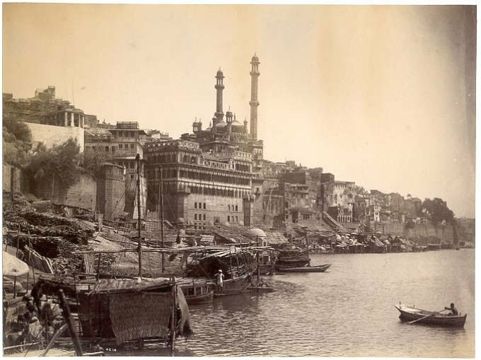
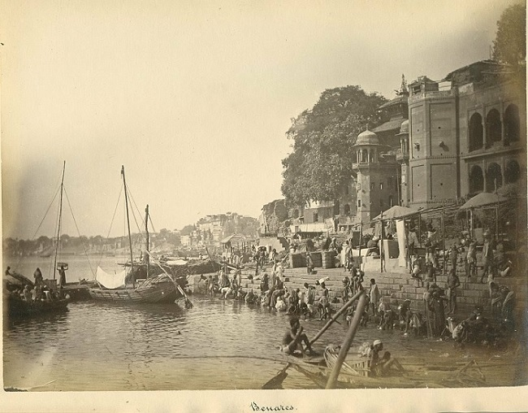
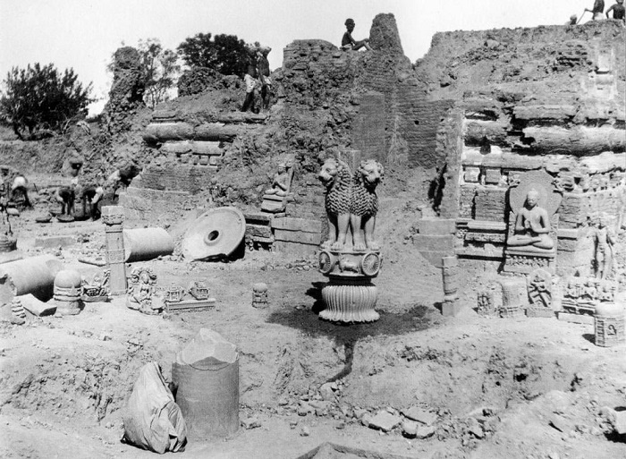
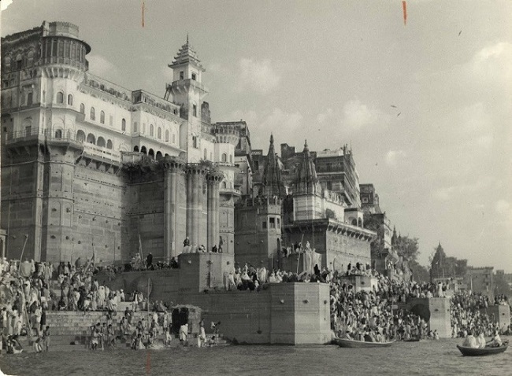
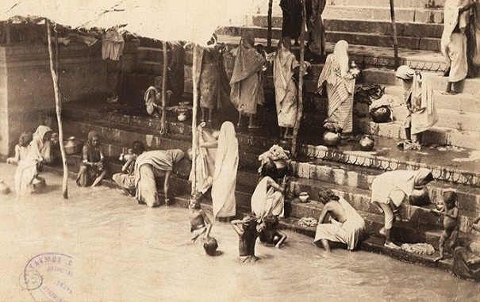

VARANASI

Varanasi, also called Benares, Banaras, or Kashi, city, southeastern Uttar Pradesh state, northern India. It is located on the left bank of the Ganges (Ganga) River and is one of the seven sacred cities of Hinduism.
HISTORY
Varanasi is one of the oldest continuously inhabited cities in the world. Its early history is that of the first Aryan settlement in the middle Ganges valley. By the 2nd millennium BCE, Varanasi was a seat of Aryan religion and philosophy and was also a commercial and industrial centre famous for its muslin and silk fabrics, perfumes, ivory works, and sculpture. Varanasi was the capital of the kingdom of Kashi during the time of the Buddha (6th century BCE), who gave his first sermon nearby at Sarnath. The city remained a centre of religious, educational, and artistic activities as attested by the celebrated Chinese Buddhist pilgrim Xuanzang, who visited it in about 635 CE and said that the city extended for about 3 miles (5 km) along the western bank of the Ganges.

Varanasi subsequently declined during three centuries of Muslim occupation, beginning in 1194. Many of the city’s Hindu temples were destroyed during the period of Muslim rule, and learned scholars fled to other parts of the country. The Mughal emperor Akbar in the 16th century brought some relief to the city’s religious and cultural activities. There was another setback during the reign of the Mughal emperor Aurangzeb in the late 17th century, but later the Marathas sponsored a new revival. Varanasi became an independent kingdom in the 18th century, and under subsequent British rule it remained a commercial and religious centre.

In 1910 the British made Varanasi a new Indian state, with Ramnagar (on the opposite bank) as headquarters but with no jurisdiction over the city of Varanasi. In 1947, after Indian independence, the Varanasi state became part of the state of Uttar Pradesh.
The Contemporary City
The original name of Varanasi was ‘Kashi,’ derived from the word ‘Kasha,’ meaning brightness. It is also known variously as Avimuktaka, Anandakanana, Mahasmasana, Surandhana, Brahma Vardha, Sudarsana and Ramya. Steeped in tradition and mythological legacy, Kashi is believed to be the ‘original ground’ created by Lord Shiva and Goddess Parvati.Varanasi has the finest river frontage in India, with miles of ghats, or steps, for religious bathing; an array of shrines, temples, and palaces rises tier on tier from the water’s edge. The inner streets of the city are narrow, winding, and impassable for motor traffic; the newer outer suburbs are more spacious and are laid out more systematically. The sacred city is bounded by a road known as Panchakosi; devout Hindus hope to walk that road and visit the city once in a lifetime and, if possible, to die there in old age. The site receives more than a million pilgrims each year. In addition, thousands of domestic and foreign tourists flock to the city annually, and tourism-related activities constitute a significant component of the local economy.

Among the city’s numerous temples, the most venerated are those of Vishvanatha, dedicated to Shiva; that of Sankatmochana, dedicated to the monkey-god Hanuman; and that of Durga. The Durga Temple is famous for the swarms of monkeys that inhabit the large trees near it. The Great Mosque of Aurangzeb is another prominent religious building. Two of the more important modern temples are those of TulasiManas and the Vishvanatha on the campus of the Banaras Hindu University. The city has hundreds of other temples. At Sarnath, a few miles north of Varanasi, there are ruins of ancient Buddhist monasteries and temples as well as temples built by the Maha Bodhi Society and by the Chinese, Burmese, and Tibetan Buddhists.

Varanasi has been a city of Hindu learning through the ages. There are innumerable schools and countless Brahman pandits (learned scholars), who are responsible for the continuation of traditional learning. There are three universities, including the large and important Banaras Hindu University (1915), and more than a dozen colleges and high schools. The city is a centre of arts and crafts and of music and dance. Varanasi is famous for its production of silks and brocades with gold and silver threadwork. A renowned carpet-weaving centre is at Bhadoi. Wooden toys, bangles made of glass, ivory work, and brass ware are also produced in Varanasi. The city is host to numerous religious festivals. Mahashivaratri, the great night of the god Shiva, is celebrated by a procession from the Mahamrityunjaya Temple to the Kashi Vishvanath Temple. The Ganga festival in November or December is dedicated to the goddess of the Ganges River, considered sacred by all Hindus. Thousands of lamps are placed on the ghats and set afloat on the river. The festival of Bharat Milap in October or November commemorates the reunion of Lord Rama with his younger brother Bharat after 14 years of exile. A five-day festival of dhrupad (classical Indian vocal style) in March attracts renowned artists from all over India to the city’s TulsiGhat along the river.

Varanasi is a major regional transportation hub. It is an important railway junction and is connected by highways to other cities in Uttar Pradesh and surrounding states. LalBahadurShastri International Airport lies about 12 miles (20 km) from the city centre.
A Pilgrimage
The land of Varanasi (Kashi) has been the ultimate pilgrimage spot for Hindus for ages. Hindus believe that one who is graced to die on the land of Varanasi would attain salvation and freedom from the cycle of birth and re-birth. Abode of Lord Shiva and Parvati, the origins of Varanasi are yet unknown. Ganges in Varanasi is believed to have the power to wash away the sins of mortals. Hindus believe that one who is graced to die on the land of Varanasi would attain salvation and freedom from the cycle of birth and re-birth.
The God Shiva says, in the ancient, Varanasi city was founded by the Hindu deity the Lord Shiva which makes it one of the most important and old pilgrimage destinations in the India. There was a general belief that the Varanasi stands on the “The Trishool” (also known as Trident), the weapon of the Lord Shiva. The name of the city is mentioned in many Hindu scriptures such as the Rigveda, SkandaPurana, the Ramayana, and the Mahabharata.

Literature Evoluation
Varanasi has also been a great center of learning for ages. Varanasi is associated with promotion of spiritualism, mysticism, Sanskrit, yoga and Hindi language and honored authors such as the ever-famous novelist Prem Chand and Tulsi Das, the famous saint-poet who wrote Ram CharitManas.. Varanasi has been lead by the most popular personalities such as the Kabir Das, Ravidas who were the superior saints and poets of the Bhakti of the 15th Century. Guru Nanak Dev (founder of the Sikhism) had visited the Varanasi at the religious festival, Shivratri in the year 1507. Aptly called as the cultural capital of India, Varanasi has provided the right platform for all cultural activities to flourish. Many exponents of dance and music have come from Varanasi. Ravi Shankar, the internationally renowned Sitar maestro and UstadBismillah Khan, (the famous Shehnai player) are all sons of the blessed city or have lived here for major part of their lives.